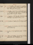
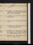

- About
- Diary
- People
- Events
- Reading
- Writing
- Meals
- Meetings
- Search

1820, Jan. 1. Sa.Malthus, 1 page. Ariosto, st. 45: Gustavus IV, p. 90. Seek Lamb: H Robinson sups.
Jan. 2. Su.Malthus, 2 pp. Ariosto, st. 70: Gustavus, p. 156. Call on J Collier: H Robinson calls n: Baron sups. Letter from P Nicholson.
3. M.Malthus, revise. Marguerite Robette, Tjartz, T T, Bancks & N G call: Cobourg, Horatius; adv. Aldisese. Write to Taylor, Norwich.
4. Tu.Indisposede. Mrs Hamilton, R B & Isa. Booth, & H Robinson call. Write to Hume, £50.
5. W.Indisposede. Ivanhoe, p. 146. C Lloyd calls na.
6. Th.Ivanhoe, p. 298; Vol. II, p. 114. M & Banks call: Booth at tea.
7. F.Ivanhoe, p. 326. Talk to W, on Louis. T T & R B call.
8. Sa.Approach Malthus. Ariosto, st. 82. T T & Macgowan call: call on P Nicholson, w. W.

Jan. 9. Su.Dante, çala. Ivanhoe, Vol. III. Baron calls na. Walk.
10. M.Ariosto, st. 100. Hazlit calls.
11. Tu.Write to M W S. Ariosto, st. 117. Booth at tea.
12. W.Spence’s Anecdotes, pp. 302. T T calls, & Fenwickna.
13. Th.Spence, çala. Walk.
15. Sa.Life of Bolingbroke, p. 220.

Jan. 16. Su.Life of Bolingbroke, p. 352, fin: Letter to Windham, pp. 312.
17. M.Ariosto, st. 140, fin: Tasso, st. 21. T T & C Mercier call.
18. Tu.Life of Jer. Taylor, p. 130. Snow sups.
19. W.Life of Taylor, p. 186. W Irving, M & T Ht call: Debus sups.
20. Th.Life of Taylor, p. 260. T T dines. Walk.
21. F.Galateo, p. 12: Life of Taylor, p. 381, fin.
22. Sa.Galateo, p. 18. Call on Lloyd: Lamb calls: Lambs sup.

Jan. 23. Su.Galateo, p. 27. W Irving dines. Kent dies.
24. M.Galateo, p. 31: Preface to Bt & Fr, pp. 120: Maid’s Tragedy, act 1, 2.
25. Tu.Tasso. Hall of Dartford calls: coach to Addlestone, by Bushey Park & Oatlands: sup at mrs Hersey’s, w. mrs Hall, miss Plumers, Bennet & Beresfords: sleeps at Beresford’s, 3 nights.[Not in London]
26. W.Crabbe’s Tales & Lackington, çala. Write to M J.[Not in London]
27. Th.Write to Lamb. Borough, 4 Epistles: Lackington, fin. Walk to Chertsey (boy bathing): mrs Whitlocke at tea. T T at tea nit.[Not in London]
28. F. Coach to London, by Sunbury. H Robinson sups. Demonville at tea na.[Not in London]
29. Sa.Accounts & Newspapers. T Ht sups. calls. George III dies.

Jan. 30. Su.Maid’s Tragedy, fin: King & No King, act 1, 2. Call on Botwright: T Ht dines.
Feb. 1. Tu.King & No King, act 3: Coxe, Walpole, çala.
2. W.Tasso: Metastasio, on do. Seek Gooch: Irving & T T call: Snow sups. King & No Kings, acts 4 & 5.
3. Th.Write to Curtis. Tasso, st. 41. Call on Banksn: dine at T T’s, w. M J & W; adv. A Boinville, L Lamb & M Lamb.
4. T.Tasso, st. 61: Scornful Lady, act 1. Banks calls: T Rodd’s. Write to Booth.
5. Sa.Tasso, st. 90: Scornful Lady, act 2. Call on Northcote: R B at tea: E White calls.
Feb. 6. Su.Tasso, C. II, st. 21: Galateo, p. 36: Plutarch, 1/2 Treatise X: Scornful Lady, acts 3, 4, 5. Call on Botwright.
7. M.Malthus, 1 1/2 pp. Tasso, st. 41. Call on Inchbaldn: & Hume: dine at Banks’s; adv. W.
8. Tu.Malthus, 1 1/2 pp. Write to Hall, Dartford. Tasso, st. 65. Banks calls: Botwright at tea.
9. W.Malthus, 2 1/2 pp. Tasso, st. 83: Galateo, p. 40. M & T T call.
10. Th.Malthus, 2 1/2 pp. Tasso, st. 97: Ipomydon: Valentinian, act 1.
11. F.Malthus, revise. Write to E Inchbald. Tasso, C. III, st. 30: Valentinian, act 2, 3. Devey calls: T Ht sups.
12. Sa.Malthus, revise. Write to mrs Beresford. Tasso, st. 53. Botwright at tea.
Feb. 13. Su.Malthus, revise. Tasso, st. 76: Lusiad, C. I. Turners, H Boinville, W Irving & Mulready dine; adv. L & D Lamb. Berri assassinatede .
14. M.Tasso, C. IV, st. 21: Lusiad, C. II: Par. Regd, B. I. Lubés call: meet Banks.
15. Tu.Malthus, 1/2 page. Conceive an Essay on Paradise Regained. Tasso, st. 52. T T calls: T Rodd’s.
16. W.Tasso, st. 74: Par. Regd, B. II, III: Huarte, p. 32. C Lloyd au soir.
17. Th.Tasso, st. 96. Theatre, Braham, 1/2 acte: G D & W Lubé sup. N G calls.
18. F.Tasso, C. V, st. 15: Huarte, p. 68. Jas Miller (L Webb Sr) calls: Botwright at tea.
19. Sa.Write to Hall, Dartford. Tasso, st. 43. Call on Taylor, Bury Court: T Ht sups.
Feb. 20. Su.Malthus, 2 pp: Milton, p. 1. Tasso, st. 71: Par. Regd, B. IV.
21. M.Tasso, st. 92: Boccaccio, p. 8. Call on Booth, & J Taylor, Bury Court. adv. miss Clennel.
22. Tu.Tasso, C. VI, st. 26. S J Banks’s; adv. Gawler: Museum; seek Cantzlaer & Le Clerce: theatre, Coriolanuse.
23. W.Malthus, revise. Tasso, st. 47: Journey to Lisbon, p. 94. Call on A Taylor. Thistlewood’s Treasone.
24. Th.Nervouse. Tasso, st. 70: Lisbon, p. 246, fin. Theatre, 1/2 Antiquary; adv. Talforde. R Taylor calls.
25. F.Malthus, 2 pp. Tasso, st. 92. M calls: tea at Lamb’s, w. M Burney. Call on Taylor, Sun.
26. Sa.Tasso, st. 114: Boccaccio, p. 12. Call on Macgowan: Mulready at tea.
Feb. 27. Su.Malthus, revise. Tasso, C. VII, st. 22: Boccaccio, p. 6. Booth dines (& w. Bentham)e.
28. M.Tasso, st. 51. Booth breakfasts; adv. Lamb: M calls: call on Tottie: seek Globe Theatre: H Robinson, après souper.
29. Tu.Malthus, 1 1/2 pp. Tasso, st. 75. Lamb calls: call on Snow & R Valpy. Dissolutione.
Mar. 1. W.Write to Hume & Kenney. Tasso, st. 97: Bowing, pp. 84. Booth & mrs Hamilton dine; adv. P Taylor.
2. Th.Malthus, 1 1/2 pp. Tasso, st. 122. P Taylor calls: theatre, Hebrewe.
3. F.Malthus, 1/2 page. Tasso, C. VIII, st. 30. Call on Hume: Botwright & T Ht call: Mulready sups. Snow calls.
4. Sa.Malthus, revise. Tasso, st. 50. Manning & M call: Evans’s, Pall mall (Skelton); adv. Heber & J Collier: Booth at tea; adv. Botwright. P Taylor calls n.
Mar. 5. Su.Malthus, 1 1/2 pp. Tasso, st. 73: Bowring, passim.
6. M.Malthus, revise. Tasso, st. 85. Call on Maudslay: theatre, 2/3 Ivanhoee.
7. Tu.Write to Rosser. Tasso, C. IX, st. 25. Lamb & T T call: call on Nairman: Booth au soir. Revolution in Spaine.
8. W.Tasso, st. 50. Tjarts & Baron call na: T Ht calls: call on Taylor (Bury Court); adv. Philip & Martineau{.} Ferriar, p. 100.
9. Th.Tasso, st. 74: Ferriar, p. 314, fin. Call on Maudslay, w. W, fr.
10. F.Commonwealth, p. 1. Tasso, st. 99. Call on Maudslay, w. W: M & T Ht call: Booth at tea.
11. Sa.Tasso, C. X, st. 25. Call on Wahlin & Lloydn: T Rodd’s. Keir calls n. B West dies .
Mar. 12. Su.Malthus, revise. Tasso, st. 53: Boccaccio, III, 9: call on N Gn: Baron sups. James White dies .
13. W.Burton, çala. Call on Telford; adv. H Palmer: H Palmer & M call (translate).
14. Tu.Malthus, revise. Tasso, st. 78. Call on Maudslay: Booth & M call: T Ht sups.
15. W.Malthus, 1 1/2 pp. Tasso, C. XI, st. 21: Burke, to the Sheriffs of Bl. M calls: call on J Taylor; adv. L Goldsmith: mrs Beresford dines.
16. Th.Tasso, st. 41. Booth calls (renvoyé)e: call on Lackington & Hayward. M calxTrial of H Hunt, &c, at York, ten dayse.
17. F.Malthus, 1/2 page. Write to M W S. Mrs Beresford calls: call on N G.
18. Sa. Malthus, 1 page; revise. Tasso, st. 66. Call on Maudslay: Booth au soir. M calls.
Mar. 19. Su. Malthus, 10 lines; mal de tetee. Tasso, st. 86: Boccaccio & Burton, çala. Call on Booth: Baron calls.
20. M. Malthus, 1 page; revise. Tasso, C. XII, st. 30. Rodd’s.
21. Tu. Malthus, 1 page; revise. Tasso, st. 67. Booth at tea.
22. W.Malthus, revise. Tasso, st. 105. Macgowan, T T, Mn & T Ht call: call on T Rodd. Send copy, Ch. 4 to 8, inc.
23. Th.Malthus, B. III, p. 1. Tasso, C. XIII, st. 25. Call on Booth (R B Tables): H Palmer dines.
24. F.Malthus, revise. Tasso, st. 55. Sup at Lloyd’s; w. Bankart.
25. Sa.Malthus, 2 pp. Tasso, st. 80. M calls: T Ht au soir.
Mar. 26. Su.Malthus, 3 pp. Tasso, C. XIV, st. 30: Cenci, pp. 104. N G calls: call on Peacock, married.
27. M.Malthus, 2 pp. Write to Rosser. Tasso, st. 55. M calls: Rodd’s. W to Maudslay’se. Giddiness au soire.
28. Tu.Write to Booth (£20), & Taylor, Norwich. Tasso, st. 79. T T calls: call on W: T H sups.
29. W.Malthus, 1 page. Tasso, C. XV, st. 22. Sup at White’s, w. 2 sisters & 2 brothers. meet F Reynlds.
30. Th.Malthus, revise. Write to M W S. Tasso, st: 45. Meet Ogilvie.
31. F.Malthus, 3 pp. Tasso, st. 66. Call on Botwrightn.
Apr. 1. Sa.Write to Owen. Tasso, C. XVI, st. 23: Monastery, p. 100. M & Me Mergez, Spiring, Ogilvie, T Ht & W call. Johnstone (Stanmore) calls.
Apr. 2. Su.Malthus, 1 page. Tasso, st. 37: Monastery, p. 331. T Ht sups, ppc. Dr Thomas Brown dies .
3. M.Malthus, 2 pp. Tasso, st. 75. Dine at T T’s, w. M Lamb.
4. Tu.Tasso, C. XVII, st. 19. W breakfasts: call on Haywd: M & Me Mergez & F Ht dine.
5. W.Malthus, 2 pp. Write to Booth. Tasso, st. 50. R Baxter calls.
6. Th.Malthus, revise. Tasso, st. 79. Macgowan calls: R B au soir.
7. F.Malthus, revise. Write to Booth. Tasso, st. 97. Irving, Mergez, Spiring & Bth call: call on W & La. Phillips; adv. Tabart: R Baxter, duplicity & treachery, 5 o’clocke.
8. Sa.Malthus, revise. Write to Lockhart. Tasso, C. XVIII, st. 30: Monastery, Vol. II. Botwright calls.

Apr. 9. Su.Malthus, revise. Tasso, st. 55. Call on sir Walter Scottn: Irving dines. M & Me Mergez, & Harwood Htdine call.
10. M.Write to Booth. Tasso, st. 80. Botwright calls: call on Rees (Longman’s). Rodd’s.
11. Tu. Malthus, 1 1/2 pp; revise. Tasso, st. 105: Monastery, Vol. III, p. 238. Call on Hume & T Rodd.
12. W.Malthus, revise. Tasso, C. XIX, st. 25: Monastery, p. 351, fin. M & Booth au soir. Arthur Young dies .
13. Th.Malthus, revise. Tasso, st. 50. Call on Maudslay: theatre, 1/2 Leare.
14. F.Malthus, revise. Tasso, st. 80. Call on W: N G sups.
15. Sa.Malthus, 2 1/2 pp. Tasso, st. 106. Call on J Taylor; adv. Stephen Kemble: Eastwick dines.
Apr. 16. Su.Malthus, revise. Tasso, st. 131. Call on Hayward & Peacock: W dines. Call on Ogilvien.
17. M.Malthus, revise. Tasso, C. XX, st. 25. Call on H Palmer & Devey: M au soir. Hume calls.
18. Tu.Malthus, revise. Tasso, st. 50. Call on Lloyd, Milwright: Botwright calls.
19. W.Malthus, revise. Tasso, st. 81: Gainsford, Warbeck, p. 38. Call on Davis (for Wolfe & Edwards) & W.
20. Th.Fevere. Tasso, st. 104. Seek Tilloch.
21. F.Malthus, revise. Tasso, st. 123. Call on Tilloch, (w. W) Lloyd millwrightn, & T Rodd.
22. Sa.Malthus, revise. Tasso, st. 144. Macgowan calls (give B. III): call on Maudslay: theatre, 2/3 Henri IV; adv. Hill, Tegart & mrs C Kemblee.
Apr. 23. Su.Malthus, 1 page. Tasso, C. I, st. 22: Thealma, p. 22. Dine at Hume’s, w. O’Neil, Bunnel, Forbes & W; adv. Caunter.
24. M.Tasso, st. 32. Call on Bramah. Thealma, p. 64.
25. Tu.Malthus, revise. Write to M W S. Macgowan calls: call on H Palmer. Butler Danvers dies .
26. W.Malthus, revise. Call on Booth: H Palmer & mrs Hamilton, au soir. Tasso, st. 41.
27. Th.Malthus, 2 pp. Hone & Botwright call: theatre, Lear (Kean)e. Parliament opense.
28. F.Malthus, revise. H Smith, Humen & T Tn call: call on Bramahn & H Palmer: call on Aldis, w. Ogilvie. C Valette arrives e.
29. Sa.J & R Taylor call: call on Bramah: Booth calls twice n .
Apr. 30. Su.Malthus, revise. Burton, p. 22. W dines[:?]sleep, w. M J, Pied Bull, Islington.
May 1. M.Seek H Palmer. Execution of Thistlewood & 4
6 2. Tu.Malthus, revise. Burton, p. 38. Call on Palmern & Ogilvie. Write to Pouncy.
3. W.Malthus, revise. Call on Palmer (adv. Telford & Sir H Parnel) & Lloyd millwright: theatre, 1/2 Montoni; adv. Wallacee. W from Maudslay’se. Write to Macmillan.
4. Th.Burton, p. 46. Exhibition; adv. Northcote, T T & femme , & M Lambe: Lamb & Botwright call.
5. F.Roister, acts 1, 2, 3. Write to Curtis. Call on Macgowan: Stanley, w. Field, calls.
6. Sa.Tasso, C. I, st. 25. Write to W Smith. Hayward, Boothn & Dr Jones call.
May 7. Su.Camoens, çala. Call on Botwright.
8. M.Malthus, 1 1/2 pp. Call on Sturmy.
9. Tu.Malthus, revise. Forman, p. 120. Seek Pouncy: call, w. W, on N G: Botwright calls.
10. W.Write to A Robinson. Forman, çala. Call on Devey: Boyle (fr. Macgowan) calls.
11. Th.Call on Jo G, Enfieldn.
12. F.Seneca, Clementia, Lib. II. Seek H Rogers & Curtis: call on Manning: Heber calls na.
13. Sa.Malthus, revise. Tasso, st. 50. Call on Macmillan: mrs Taylor, Norwich, calls.
May 14. Su.Tasso, st. 75. Call on Booth: P P calls: Harwood Ht dines; adv. Henry: call on Aldis; adv. mrs Farren. Geometrical ratio.
15. M.Wilson, Demosthenes, çala: Tasso, st. 90. Thurgar calls: Botwright dines: E White sups.
16. Tu.Malthus, revise. Call on T Rodd. Write to Pouncy.
17. W.Tasso, C. II, st. 13. Sir J Banks’s; adv. Lee: Haydon, Christ’s Entry: meet J Evans: theatre, C G, Virginiuse: Booth calls n.
18. Th.Malthus, Book V. revise. Tasso, st. 25. Call on Curtis & Maudslay: meet Hayward & Hill.
19. F.Malthus, revise. Tasso, st. 50.
20. Sa.Tasso, st. 67. Lamb calls: call on Dr Jones. Cecilia, p. 108.
May 21. Su.Malthus, revise. Cecilia, p. 240. Call on Boothn: P P & miss Collins dine: Booth au soir.
22. M.Malthus, 1 page. Cecilia, p. 299; Vol. II, p. 138.
23. Tu.Malthus, revise. Cecilia, p. 285: Rabelais, çala. Meet Ogilvie.
24. W.Tasso, st. 97: Cecilia, Vol. III, p. 160. S & F Pilcher & Banks call: call on Manning.
25. Th.Tasso, bis: Cecilia, p. 190. Call on Mn, Keirn, Street & H Robinson: Botwright at tea.
26. F.Malthus, 1 page. Mrs Taylor, Norwich, bis, & H Pilcher call: call on H Corbould. Cecilia, p. 321.
27. Sa.Malthus, revise. Dine w. Jo G, Enfield.
May 28. Su.Phalaris, çala: Cecilia, Vol. IV, p. 154. Mr & Mrs Pilcher, S, F & H dine.
29. M.Malthus, revise. Rabelais, çala: Cecilia, p. 201.
30. Tu.Dryden, on Nat. Religion, çala: Cecilia, p. 225. Call on Booth (Isa) n. W sleeps, Islingtone.
June 1. Th.Malthus, 1 1/2 pp. Tasso, C. III, st. 25: Cecilia, Vol. V, p. 66. T T, Macmillan, & Boothn call: 4 Pilchers & mrs Hamilton at tea: Call on mrs Pilchern.
2. F.Malthus, revise, 1/2 p. Tasso, st. 50: Rabelais, Vol. II, p. 28: Cecilia, p. 128. Call on Devey & Booth; adv. Christy. (receive Dissertation)
3. Sa.Booth, revise. Write to Maudslay. Booth, Keir, mrs Pilcher & Henry call. Cecilia, p. 255: Rabelais, p. 68.
June 4. Su.Malthus, revise. Rabelais, p. 95: Cecilia, p. 321, fin. Call on Booth; adv. R B: Mrs Pilcher & Henry sup. Grattan dies .
5. M.Malthus, revise. Tasso, st. 76. Rosser calls: call on J Lowndes (adv. Broughton) & mrs Pilcher, for M J.
6. Tu. Malthus, revise; invent . Call on T Rodd: meet Booth, twice. Queen arrivese. Duel, H Grattan & Earl of Claree.
7. W.Write to Bevan. Evelina, p. 62. Waterloo, East Indiaman, w. 4 Pilchers, M J, W & C Valette; officers, Shea & Burnete: Humen & Burnet callLubé call.
8. Th.Malthus, 1 1/2 pp, on Tuesday’s invention. Tasso, C. IV, st. 25. Hume calls, & 6 Pilchers; adv. Rosser: Rosser sups. Write to Pouncy.
9. F.Malthus, 3/4 page. Jo G breakfasts: Macgowan calls: H Robinson sups.
10. Sa.Malthus, revise. Mr & mrs Gisborne call, & T Tna: call on Macgowan.
June 11. Su.Malthus, revise. Evelina, p. 144. Sup at Pilcher’s, w. M J & W.
12. M.Malthus, 2 pp. Hume calls: meet Broughton: call on M Gisborne: 3 Pilchers call.
13. Tu.Malthus, 1 page. Write to M W S. Call on Devey: Rosser au soir. Burnet of the Waterloo calls na.
14. W.Malthus, 3 pp. Mrs Pilcher, F & H call.
15. Th.Malthus, revise. Meet Booth: S & F Pilcher call, ppc: call on M Gisbornen. meet Broughton.
16. F.Malthus, revise. Call on Macgowan, Windmill Str: Snow sups. King’s Mews shute.
17. Sa.Malthus, Book VI, revise. British Institution, Portraits: H Pilcher calls: theatre, Rizzio; adv. J Taylor & Broughtone.
June 18. Su.Malthus, revise. Evelina, p. 233. Call on M Gisborne; adv. T G: Hd & Hy Ht at tea; adv. H Pilcher.
19. M.Malthus, 1 page. Evelina, Vol. II, p. 104. Lubés & Rosser call: Gisbornes at tea; adv. Booth. Sir Joseph Banks dies .
20. Tu. Malthus, 1 page; revise. Evelina, p. 174. H P calls.
21. W.Malthus, 2 1/2 pp. P P au soir: tea Gisborne’s. Call on Northcote.
22. Th. Malthus, 1 page; revise. Write to M W S, triplicate. Evelina, p. 259, fin. Hot weather, 7 days.
23. F.Malthus, revise. British Institution, Portraits: Rosser calls, ppc: meet Hill & H Smith.
24. W. eMalthus, revise. Tasso, C. IV, st. 25: Mathilda, p. 226, fin. T T calls.
June 25. Su.Malthus, revise. Tasso, st. 40: Boccaccio, Ghismonda. H P, miss Collins, Hd & Hy Ht & May dine.
26. M.Malthus, revise. Tasso, st. 50. Booth at tea.
27. Tu.Malthus, revise. Write to Taylor, Norwich. Tasso, st. 60.
28. W.Malthus, revise. H P sups.
29. Th.Malthus, revise. Tasso, st. 75. Call on Booth, & M Gisbornen: Botwright calls.
30. F.Malthus, revise. Call on T Rodd.
July 1. Sa. Malthus, revise. 1 1/2 pp. Tasso, st. 96. T T calls.
July 2. Su.Malthus, revise. H P dines.
3. M. Malthus, revise; 1 1/2 pp. Snow at tea: T R’s. Call on Booth. Write to Macmillan, M J.
4. Tu.Malthus, 2 pp. Call on Pouncy & M Gisbornen.
5. W.Malthus, 1/2 page. Rey, Ric. III, p. 180. Macmillan calls: call on Macgowan.
6. Th.Malthus, 1 1/2 pp. Call on Manning, Macmillan & Rodd: Seek Hume, Hayward & E White: Booth calls n. Revolution of Naplese.
7. F.Call on Macgowan & Hayward: Jo. Jackson & femme dine; adv. Botwright: theatre, Othello, Kean, acts 2 & 3; adv. Talfourde.
8. Sa. Malthus, 1/2 page; revise. Macgowan calls: tea Gisborne’s.
July 9. Su.Malthus, 1/2 page. Rey, Ric. III, p. 371, fin. Call on Botwright: H d & Hy Ht dine: J Jackson & N G call. Opening of the Spanish Cortese.
10. M.Call on Booth: tea E White’s, w. brother & 3 sisters.
11. Tu.Call on Talfourd, Hardwick, Knowles (adv. Bill) & Davison: seek P Turner & Rodd: call on Hayward: Booth at tea.
12. W.Call on Macgowannit, & Irvingn: seek S Rogers: Hume calls—follow n: Snow & H P sup. Nightmare Abbey, p. 104.
13. Th.Write to Taylor, Norwich. Nightmare Abbey, fin. Call on Curtis.
14. F.Malthus, revise. Apuleius, p. 72. Irving calls: Mackintosh au bas: call on Macgowan.
July 16. Su.Malthus, revise. Call on Botwright: C Mercier calls: H P sups; read Book I, cap. ult.
17. M.WriMalthus, 2 pp. Write to Morton, Pangborne: Hume & Boyle, printer, call. Diarrhoeae. Bt calls.
18. Tu. Malthus, 7 lines, 4 A M; revise. Apuleius, p. 166. Macgowan calls: mrs J Jackson, dines, ppc.
19. W.Malthus, 1 1/2 pp. Write to Taylor, Norwich. M & Boothn call.
20. Th.Malthus, 1 page. Balzac à Chapelain, p. 93. Call on M Gisborne: M calls.
21. F.Malthus, 1/2 page. Write to M W S & Kenney. T T. calls: call on T Rodd. Hy Ht dines.
22. Sa.Call on Miller, bookseller; adv. Bartley: Hy Ht. dines; goes for Francee.
July 23. Su. Malthus, 1 page; revise. Dine at T T’s, w. M Lamb & W. call on Banksn.
24. M.Malthus, revise. Irving calls: call on Booth: Snow sups.
25. Tu.Malthus, 1 page. Call on Leslie, w. Irving: theatre, Beggar’s Operae.
26. W.Letter to Cooper, 2 pages. Booth calls, 10 o’c: call on Miller.
27. Th.Malthus, 2 pp. C B Brown, çala.
28. F.Malthus, revise. Write to Cooper. Life of Sir T Wyat, pp. 88: C B Brown, çala.
29. Sa.Malthus, revise. T T calls.
July 30. Su.Malthus, revise. Irving, Leslie & H P dine.
31. M.Malthus, 1 1/2 pp. Call on Boyle. Hume & Bt call.
Aug. 1. Tu. [Hygeia.] Malthus, revise. Booth at tea.
2. W.Malthus, revise. Write to Rosser. Call on Boyle: H P sups: call on T Rodd.
3. Th.Malthus, revise. C B Brown, çala. Call on Longman. x
4. F.Malthus, Book II, Chap. vii, 2 pp.
5. Sa.Malthus, revise. C B Brown, çala. Call on Boyle{.}
Aug. 6. Su.Malthus, revise. C B Brown, çala. Turners dine. Invent Peroration. Duchess of York dies.
7. M.Malthus; invent Peroration. Tea Gisborne’s.
8. Tu.Indisposede. Call on Booth: meet W Tooke & Broughton.
9. W.Malthus, 2 pp. Call on Pouncy, & Walker, Finsbury Square.
10. Th.Malthus, 3 pp. Call on Richardson & Corfield; &, w. M J, on Booth; adv. C B.
12. Sa.Preface, p. 3, 4, fin. Macgowan calls: call on Boyle & Sturmy: Rodd’s.
Aug. 13. Su.Preface, 1 page; revise. Call on Mulready, w. W: dine at Hume’s, w. C Hume, M Dawe & W.
14. M. Postscript, 2 pp; revise. Rodogune.
15. Tu.Malthus, revise. Macgowan & Sidney Hall call. call on Tho GregoryE & P Picher at tea na.
16. W.Malthus, revise. Macgowan & Sidney Hall call: call on Tho. Gregory & Booth: meet Boaden.
17. Th.Malthus, revise. Boyle (perdita) & Tho. Gregory call: seek I’Anson. Trial of the Queen commencese.
18. F.Malthus, revise. Call on I’Anson: Booth sups; last copy.
19. Sa.Malthus, revise. Call on Miller & Macgowan
XXIII.
Aug. 20. Su.Malthus, revise. Wit without Money, acts 1 & 2. Call on Booth.
21. M.Malthus, revise. Sup at Gisborne’s.
22. Tu.Malthus, revise: W Curran calls.
23. W.Malthus, revise. Theatre (Lyceum), Vampiree.
24. Th.Malthus, revise. Call on Booth: W Curran dines; adv. Booth; invitée Isa. Booth. Revolution of Portugale.
25. F.Malthus, revise. Letter from P B S. Call on M Gisbornen. Wit without Money, act 3, 4, 5. Sicke.
26. Sa.Malthus, revise. Write to M Gisborne. Gisborne’s, au soir.
Aug. 27. Su.Malthus, revise. Scornful Lady, acts 1 & 2. Meet Perry & Tegart.
28. M.Malthus, 1 page. Theobald & Monro signe: call on Rees (Longman’s): theatre, Othello, 3 acts (B & K); adv. Wilkiee. Answer to Malthus sent to America.
29. Tu.Malthus, 1 1/2 pp. Write to P B S. Mrs Hamilton dines.
30. W.Malthus, 1/2 page. Scornful Lady, fin: H Smith, Macgowan & W Curran call: Booth at tea.
31. Th.Malthus, revise. T Rodd calls: call on T Rodd.
Sep. 1. F.Malthus, revise. H Smith calls: theatre, 2/3 Dog Dayse.
2. Sa.Malthus, revise. Lamb après diner: Booth calls n. M J for Rochestere.
Sep. 3. Su. Malthus, note on China; revise . Call on Booth: T T & W Curran sup.
4. M.Malthus, revise. Hume calls.
5. Tu. Packet to Gravesend: coach to Rochester: dine at Pilcher’s, w. M J: Rochester Castle: sleep.
6. W.Upnor Castle, w. Pilcher’s, & M J.
7. Th.Eclipse. Coach from Rochester, w. M J, afternoon. Write to Curtis.
8. F.Malthus, revise. Call on Macgowan: meet Reynolds.
9. Sa.Malthus, revise. Write to P Anson. Macgowan calls, ira: call on T T. House of Lords adjournse.
Sep. 10. Su.Malthus, revise. Call on Aldis. Bonduca
11. M.Call on Hayward & Macgowan: W Curran calls: [Malthus, revise.] Booth at tea
12. Tu.Abbot, Vol. I. Call on H Smithn & Longman, seul.
13. W.Malthus, revise: meditate Book VII. Abbot, Vol. II, p. 272. H Smith & Macgowan call: call on Longman, signe.
14. Th.Abbot, Vol. III. Write to Macmillan.
15. F.Malthus, revise. Write to M Gisborne. T T calls: call on Hayward: W Curran sups.
16. Sa.Baldwin, Geo. III, 2 pp. Malthus, revise. Call on I’Ansonnit.
Sep. 17. Su. Malthus, revise; Colonies, çala.
18. M.Hero & Leander, C. I. Morgan (stationer) calls: call on T Rodd; adv. Triphook.
19. Tu.Prometheus Unbound, act 1: Plutarch, Treatise 43. Dine at T T’s, w. W Curran, M J & W.
20. W.Plutarch, Treatise 69. Sadlers Wells, Robbers, w. M J, C V & W; adv. Surrs & E Pe.
21. Th.Plutarch, Treatise 10, fin. M & T T call: call on Boothn: meet R Manning.
21. F.Call on R Dodd, engineer: Booth & Bt at tea.
23. Sa.Call on Knowles, Boaden & J Taylor: seek Gregory.
Sep. 24. Su.Macpherson, G Britain, p. 56. Hd Ht dines.
25. M.Write to Taylor, Norwich. Macpherson, p. 76. Call on Gregory & Macgowann.
26. Tu.Diarrhoeae. Valentinian, acts 1, 2, 3. T T calls, & Blaetterman (Ogilvie defuncto).
27. W.Malthus, revise: conclusion, 1 page. Valentinian, fin. Call on Macgowann & I’Ansonn.
28. Th.Macpherson, p. 96: Clarendon, çala. Call on Macgowan, & I’Ansonn.
29. F.Clarendon, çala. Booth at tea; discuss his idea of an improved edition of Political Justice.
30. Sa.Malthus, revise. Philaster, acts 1 & 2. Willats calls n.
Oct. 1. Su.Malthus, revise. Philaster, fin.
2. M.Clarendon, çala. W Curran & //3 Turners dine: Call on Macgowann, Miller (booksr), & I’Anson. Banks calls n.
3. Tu.Write to Nash. Macgowan calls. Queen’s Defence: ends 27the
4. W.Malthus, revise. Write to Curtis. Call on Sturmy & T Rodd: theatre, 1/6 Rob Roye.
5. Th.Malthus, revise. Call on N G. King & No King, acts 1 & 2.
6. F.Malthus, revise. King & No King, fin. Call on Macgowan: E White sups. meet Morton.
7. Sa.Malthus, revise. Call on W Morganna: Booth au soir.
Oct. 8. Su.Rollow, act 1. Call on T T n.
9. M.Write to Macgowan. Boswel, Life of Johnson, p. 124. M Jones calls.
10. Tu.Write to Taylor, Norwich, & to Pouncy. Boswel, p. 274. Botwright at tea.
11. W.Boswel, p. 357. Botwright calls: theatre, 1/2 Lumpkine: W Curran sups.
12. Th.Malthus, revise. Boswel, p. 416. Hor. Smith calls: call on Hayward.
13. F.Malthus, 5 lines, & Boswel. Boswel, p. 500. Seek Seward: call on W Morgan.
14. Sa.Boswel, p. 538. Booth calls, & T T twice, £20.
Oct. 15. Su.Malthus, 1 page. Boswel, p. 616. Mrs Hamilton & Hd Ht dine.
16. M.Huntsman (fr. Longman’s) calls: call on Hay//ward, w. Hor. Smith, Longmanna, Seward & T Rodd: meet Macgowan.
17. Tu.Boswel, p. 670. Call on Rees (Longman’s): Keir au soir.
18. W.Chapman, Fifth Satyr, Juvenal.
19. Th.Every Man in his Humour. Send to Hazlit. Malthus subscribede.
20. F.M calls: Hor. Smith, Knowles, Mulready & T T dine. Fox, act 1. Malthus, 4 lines.
21. Sa.Fox, act 2. Call on Longman & Soane. Send to A Robinson.
Oct. 22. Su.Boswel, p. 716; Vol. II, p. 60. Dine at Hume’s, w. W; adv. Anderson.
23. M.Write to Kenney. Boswel, p. 104.
24. Tu.Boswel, p. 194. Letter to Mackintosh.
25. W.Boswel, p. 260. Baxter calls: Botwright at tea: call on Miller; adv. Perkins: meet Macgowan. Give to Botwright. Receive 1000 Malthuse.
26. Th.Write to P B S. Fox, act 3. Seek Wild, drawing master: meet Booth. Send to Lamb.
27. F.Write to Mackintosh. Boswel, p. 346. W Curran, & Leslie (Huntingdon) call: call on O Rees & T Rodd. Send to Booth, W Morgan & Mackintosh.
28. Sa.Write to Perry. Call on on Wild: Booth at tea. Send to Perry, Northcote & Coleridge.
Oct. 29. Su.Boswel, p. 490. T T calls.
30. M.Write to R Sharp. Call on J Taylor: meet H Robinson: W Curran dines; adv. J Taylor. Send to R Sharp, Leslie, Taylor (Norwich) & Gifford. Deliver 500 Malthuse.
31. Tu.Write to Rosser. Boswel, p. 590. Send to Hayward, Rees & Malthus. Call on Hayward.
Nov. 1. W.Write to Hudson. Tasso, C. V, st. 20. Greece, revise. Theatre, 1/2 Romeo; adv. Talfourd, Shiel & Wallacee. Send to Bentham, Inchbald, & Miller, bookseller.advertised, M C & Timese. [Answer to Malthus Published.]e
2. Th.Boswel, p. 660. H Smith, & Dr Jonesna call: call on Hayward, & Husey (for Thurgar).
3. F.Note from Dr Rees. Boswel, p. 691. Booth calls.
4. Sa.Write to R Price. Vanessa, çala. T T calls (Malthus) & W Curran.
Nov. 5. Su.Hero & Leander, C. II: Swift, çala. Hd Ht dines; N G at tea.
6. M.Letter from W Morgan. Sheridan, Life of Swt, p. 108.
7. Tu.Swift, p. 154. Hudson calls: P P dines: Bt at tea: call on T Rodd.
8. W.T T calls: call on Macgowan: Booth at tea: theatre, Twelfth Nighte. Send to Constable & Stodart.
9. Th.Write to H Pilcher & P H G. P P dines. Victor, Vol. 1.
10. F.Swift, p. 194. Okely (Pyrology) calls: call on Macgowann: meet Sheil, Lubé & Wallace. Bill against the Queen Rejectede.
11. Sa.Swift, p. 232: Victor, Vol. 2 & 3. Hayley dies .
Nov. 12. Su.Greece & Life, revise. Swift, p. 327. Hayward, call on.
13. M.Life, revise. Macgowan & M call: Booth at tea.
14. Tu.Swift, p. 384. Macgowan calls: call on O Rees; adv. Phillips: theatre, Wallace; adv. Knowles, mrs Freeman , Hill & Wallace (& major Cartwright )e.
15. W.Life, 3 pp. H Smith, Lamb & Bt call: call on Sturmy, & J Taylor; adv Jer.: meet Hill & Banks: call on T Rodd.
16. Th.Write to Curtis. Luders, on Henry V. Call on Northcote: meet Rogers & M Burney: Wordsworth calls n: Hudson au soir.
17. F.Ravenscroft calls: sup at Lamb’s, w. M Burney, M J & W.
18. Sa.Swift, p. 467, fin: Laing, on Mary, p. 164. Ravenscroft & Rosser call.
Nov. 19. Su.Laing, p. 252. Hd Ht dines. F Pilcher dies
20. M.Camden & Buchanan, çala. Write to H Pilcher. Rosser calls. Rheume
21. Tu.Sir Ant Brown, &c. T T calls: Rosser dines.
22. W.Laing, on Ossian, pp. 94. Wordsworth & W W, fils, call: T T at tea.
23. Th.Life, 1 page. Rosser calls: call on T Rodd. Parliament proroguede.
24. F.Write to Fenwick, on £10. Osborne, p. 64.
Nov. 26. Su.Ariosto, Satires, pp. 135: Osborne, p. 124. Meet J Hollis, 77.
27. M.Osborne, p. 170: Melmoth, p. 90. Bt calls.
28. Tu.Melmoth, p. 238. Bt at tea: theatre, Caliph & Cobler; adv. Thelwals, Talfourd, Broughton & Philipsese: Hudson calls n.
29. W.Melmoth, p. 341; Vol. II, p. 198.
30. Th.Camden, çala. Melmoth, p. 321; Vol. III, p. 100. Call on Hayward, Husey & Miller: Bt at tea.
Dec. 1. F.Melmoth, p. 322. Call on J Taylor, Talfrd & T Rodd. Write to M W S & Hayward.
2. Sa.Melmoth, p. 368; Vol. IV, p. 253. Call on Hume & Northcote: T T calls.
Dec. 3. Su.Melmoth, p. 454, fin.
4. M.Walton, Life of Herbert. Bt at tea.
5. Tu.Thuanus & Camden, çala. Seek Davison thrice. Hudson & Bt call: Lubé at tea.
6. W.Write to Okeley. Buchanan, p. 639 to 668. Phil. Curran calls: mrs Hamilton dines. Deliver 50 Malthuse.
7. Th.Buchanan, p. 680, & çala . Theatre, J Cæsar; adv. Talfourd, Broughton & Philipsese.
8. F.Call on Nashn; see Mrs Nash.
9. Sa.Write to Taylor, Norwich. Call on Nash: theatre, 1/2 Lear (Vandenhoff); adv. J Taylor, Knowles & mrs Freemane: H Robinson sups.
Dec. 10. Su.Buchanan, çala. N G at tea. W calls on Nashe.
11. M.Buchanan, çala. Hume & M Jones call: call on H Boinville: Hudson sups.
12. Tu.Museum; Mackenzie, & Du Mauriere. H Boinville & C T call: meet Rogers. Deliver 200 Malthuse.
13. W.Edward V, çala. Call on O Rees: Fairley & T T call.
14. Th.Buchanan, Epithalamium: Broghil, p. 60. Call on Isa Booth & T Rodd: theatre, 1/5 Overreache. mrs Saml Wilcocke calls: call on Hayward.
15. F.Orrery, çala. Macgowan calls: call on J Taylor: Fairley at tea: theatre, Pocahontas; adv. Talfde.
16. Sa.Malthus, revise. Orrery, p. 103, fin. M & Fairley call, & A Macgowan.
Dec. 17. Su.Malthus, revise. Buchanan, Genethliacon, &c.
18. M.Malthus, revise. Write to Nash. Call on Soane, & Perkins; adv. C & G Heath & Miller: M calls: theatre, 1/10 Pizarro; adv. Philipse.
19. Tu.Malthus, revise. Dine at T T’s, w. M J & W; adv. D & M Lamb.
20. W.Malthus, revise. Buchanan, p. 682. Fairley at tea.
21. Th.Malthus, revise. Write to Taylor, Norwich. T T calls: call on Booth; adv. C T.
22. F.Malthus, revise. Buchanan, p. 684. Philips, A Macgowan & M call: Vestry; adv. Waithman, Phillips, Galloway & Reeves: R T au soir
23. Sa.Malthus, revise. Mrs Hippesley & I’Anson call: call on Rodd, senr & junr.
Dec. 24. Su.Malthus, revise. Buchanan, p. 689.
25. M.Malthus, revise. Buchanan, p. 691. Fairley calls: Jacksons & Hd Ht dine. Letter of Constancio.
26. Tu.Malthus, revise. Buchanan, p. 693. Call on Hayward & C Turner.
27. W.Malthus, revise. Write to Rosser. Buchanan, 696: Pot of Basil. Fairley 1/2 dines.
28. Th.Malthus, Index. Call on Nash (w. W), Rogersn, & Fuseli ; adv. L Dudley Stuart: M calls.
29. F.Malthus, index. Fairley calls: Hudson sups. Write to Nash. W to Nashe.
30. Sa.Malthus, index. Write to Hudson.
Dec. 31. Su.Malthus, index. Meet Wallace: Fairley dines: Hd Ht & N G au soir.
Contact --  -- Cookies/Privacy
-- Cookies/Privacy